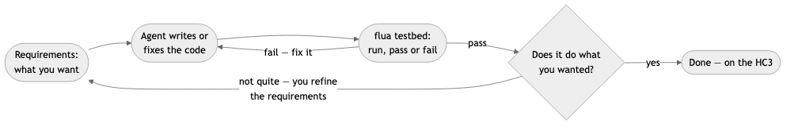
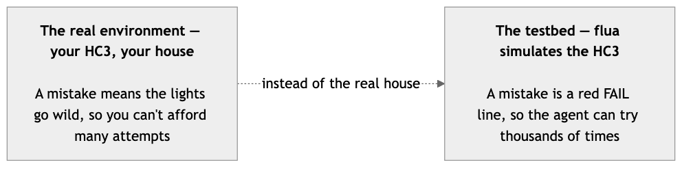

For fifty years, building software meant writing code — a skill most people never learn. That changed, quietly, a couple of years ago: now you can describe what you want, and an AI agent writes the code for you. People call it "vibe coding", as if it were just vibes. It is not. It is a loop — and the loop has two parts people keep getting wrong: the agent's part (write, run, fail, fix) and your part (requirements and judgment). This post is about both, and about why the environment the agent works in matters more than the model.
This shift runs deeper than convenience. For a long time, "software development" meant being good at a programming language — Lua, in our case. But the language was never the point; understanding the domain was. Think of assembler: there was a time programmers were proud of hand-writing it, until compilers got good enough that nobody sensible did it anymore. The valuable skill moved up a level — from instructions to design. The same move is happening now: the AI agent is a requirements compiler. You write the requirements, it compiles them to code. The skill worth having is the one you already have — understanding home automation strategies and flows, knowing what your house should do. The language is becoming the assembler of our time.

The inner loop is the agent's: write code, run it, fail, fix it, repeat — until the tests pass. Agents are good at this; it is mechanical, and they never get tired of it. The outer loop is yours: look at the result and ask "does this do what I actually wanted?" If not, you refine the requirements and the inner loop runs again.
Note what the "not quite" arrow really means: refining is not failure. It is usually the first moment you discover what you actually wanted. The first version is a question, not an answer — build something small, see what is wrong with it, say what is wrong, build again. You do not need to get the requirements right the first time. You need to stay in the loop.
Self-driving cars taught the industry this lesson the hard way: you do not train them on real roads, with real pedestrians. You train them in simulation, where a mistake is a number, not a person. The same logic applies to your home automation.

Your real controller is the public road. A bad version of an automation means lights going wild at night, shutters opening in the rain, the heating doing something creative — and a family that notices. An agent that can only test against the real thing gets very few attempts, so it guesses carefully and stops. An agent with a testbed gets thousands of attempts, so it tries things, sees them fail, and learns. That is the difference between an agent that guesses once and an agent that iterates until it is right.
flua is that testbed: it simulates the HC3 on your laptop. The agent runs the automation against a simulated house, watches it fail, fixes it, runs again — with no controller anywhere in the loop. And it does not just run the code: it verifies it. Every run ends in a pass/fail line and an exit code, which is exactly the feedback an agent is built to use.
Agents have changed how software gets built, but not all tools have caught up. A tool is agent-friendly when it plays to what agents are good at — and here is what flua does about each of those:
You do not need to write code. You need the two things no model has: knowledge of your house, and the authority to decide what "right" means.
For your home automation this means: you can have an agent develop the QuickApp that automates your specific need. You provide the goal and the judgment; the agent provides the code; the simulated house provides the safe place to iterate — and the same file goes onto your real HC3 when you are happy with it.
That is the future of software development, and it has already started: not computers replacing developers, but everyone getting an engineer. The people who get the most out of it will not be the ones who write the best code. They will be the ones who know best what they want — and who keep refining it, round after round, until the thing in front of them finally matches the thing in their head. The requirement is the product; the code is just how it compiles.